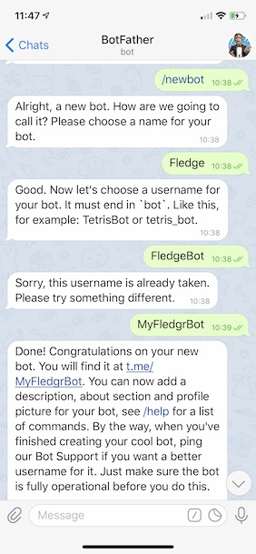

Telegram Messages¶
The foglamp-notify-telegram delivery notification plugin allows notifications to be delivered as instant messages on the Telegram messaging platform. The plugin uses Telegram BOT API, to use this you must create a BOT and obtain a token.
To obtain a Telegram BOT token
Use the Telegram application to send a message to botfather.
- In your message send the text /start
- Then send the message /newbot
- Follow the instructions to name your BOT
Copy your BOT token.
You now need to get a chat id
In the Telegram application send a message to you chat BOT
Run the following command at the your shell command line or use a web browser to go to the URL https://api.telegram.org/bot<YourBOTToken>/getUpdates
wget https://api.telegram.org/bot<YourBOTToken>/getUpdatesExamine the contents of the getUpdates file or the output from the web browser
Extract the id from the “chat” JSON object
{"ok":true,"result":[{"update_id":562812724, "message":{"message_id":1,"from":{"id":1166366214,"is_bot":false,"first_name":"Mark","last_name":"Riddoch"}, "chat":{"id":1166366214,"first_name":"Mark","last_name":"Riddoch","type":"private"},"date":1588328344,"text":"start","entities":[{"offset":0,"length":6,"type":"bot_command"}]}}},
Once you have created your notification rule and move on to the delivery mechanism
- Select the Telegram plugin from the list of plugins
- Click Next
- Configure the delivery plugin
- Telegram BOT API token: Paste the API token you received from botfather
- Telegram user chat_id: Paste the id field form the chat
- Telegram BOT API url Prefix: This is the fixed part of the URL used to send messages and should not be modified under normal circumstances.
- Enable the plugin and click Next
- Complete your notification setup
When the notification rule triggers you will receive messages Telegram application